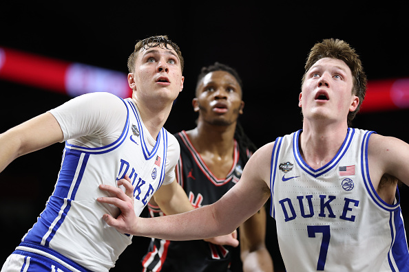

A Quarter Century of NBA Rookies
How the league’s youngest players have changed — in size, skill, origin and impact — from 2000 to today.

When I finished my introductory "30 teams in 30 days" season preview last month, I knew my next pivot with Hanson Hoops content would be toward more in-depth, carefully planned big picture pieces, the kind that dive deeper into a specific trend, player or team that I wanted to zero in on using my data journalism and visualization toolkit. From there, the first thing that came to mind was the recent influx of young talent the league has seen in recent seasons, continuing through this year’s stellar rookie class, who only a few months into their careers have already proved themselves a deep and promising crop of young talents. With names like Cooper Flagg, Derik Queen, VJ Edgecombe and Kon Knueppel garnering lots of hype and praise from media and fans alike, I decided to examine just how good this class really is in the context of my NBA viewing lifetime, which covers the last 25 years dating back to the 2000-01 season.
So I started doing some digging, and gathered data on all rookies this millennium, from the much derided draft class of 2000 all the way through this year’s rookies. What I found illuminated several of the long-term trends the league has seen in the past quarter century, but also pointed to some subtler trends I wasn’t even conscious of. More to the point, it also clarified the place in recent history this rookie class currently occupies, casting more doubt than credence given to the claims made in the media and online by fans that this year’s rookie class could be the best since the legendary 2003-04 class – better known as the LeBron-Wade-Melo-Bosh draft.
While the data shows that this year’s rookie class is deep and undeniably on pace to place numerous names into the top tier of rookies from this century, it also shows that the 2025-26 rookies still come short of the best classes of the era, and that the real strength of this young crop of players relative to other drafts in recent history may prove to be their depth of talent, rather than the quality at the top of the class. Sure, rookie of the year frontrunners like Flagg, Knueppel and Edgecombe are really exciting, promising, historically high-performing rookies by any metric. But none of them are on pace to fall into the top 10 or even the top 20 rookies this century by any of the per-possession statistical categories I used to compare across very different eras of NBA rookies.
It’s still too early to say whether a late season leap from any of those top three or even one of the other promising rookies we have this season could catapult one of those players into that upper echelon of 2000s rookies, but what does seem safe to say three months into this season is that this is a historically deep class that nonetheless is further from the greatest rookie class since ‘03-04 than the hype would lead some to believe.
Take Kon Knueppel, the highest scorer in this year’s class, currently on pace to become the most prolific three point shooting rookie in league history, hitting 43 percent of his 8.1 3-point attempts per game through his first three months of NBA action. That’s an incredible stat for a first year player, particularly given his lack of star hype going into his rookie season. But even with that shooting excellence, Knueppel still ranks only 13th in points per 100 possessions out of all 2000s rookies with at least 300 minutes played, coming just ahead of Karl-Anthony Towns in 2015-16 but behind Kevin Durant in 2007-08. He’s incredible and is clearly going to be a winning, star-caliber player in this league, just not quite a top 10 rookie of the era.
The same can be said for the rookie of the year frontrunner, Cooper Flagg, the 18-year-old Dallas Mavericks phenom whose all-around, versatile game has seamlessly transitioned to the professional level after a dominant high school career and one sensational season at Duke. Flagg is great, by any metric, but among the top performing rookies of this century, he falls in the middle of the pack by all the advanced metrics I studied. Edgecombe, meanwhile, doesn’t even rank in the best 200 rookies of the 2000s by points per 100 possessions, despite a stellar and frequently eye-popping rookie campaign so far.
What are the big takeaways from my analysis, if not a ringing endorsement of this year’s crop of rookies as a top-tier class of the past 25 years? Well, the big picture trends I found in this analysis felt more telling and for me, at least, more interesting, than the comparisons that could be drawn between this year’s rookies and the elite rookies of seasons past. A few of my favorite findings:
- While average per-game three point attempts have risen substantially, and unsurprisingly, over the quarter century, the mean percentage of threes hit by rookie classes has actually fallen since 2000-01, suggesting that while rookies know they are expected to shoot and hit more threes today than in past decades, they’re not actually better at hitting their threes than rookies in the past were.
- As the rookie heights stream graph shows, this year’s rookies had the largest range of heights across all positions taken this century. The trend I expected to see across all positions was a narrowing of the range of heights selected (and, measured by minutes, played after being selected) over the years. What I found instead was quite literally the opposite, with a noticeable widening in the range of heights taken and minutes played across all heights in just the past three drafts, after a consistently smaller range seen over the previous 22 drafts.
- Drilling down deeper on the heights analysis revealed a steep uptick in large guards taken in recent drafts, but not in the minutes allocated to those guards. Teams seem to be growing more keen on taking larger playmakers, but that has yet to translate to more minutes for those larger guards.
- The much discussed growth in the ratio of foreign to American players taken in 21st century NBA drafts proved to be more exaggerated and imagined than real. While it’s true that more foreign-born rookies have entered the league this century than any other period in league history, the ratio of international rookies to American rookies did not significantly change from 2000 to today. Indeed, many of the best players in the world right now are non-Americans, but that doesn’t appear to be the product of quantities drafted, but rather the quality of international prospects relative to American ones.
- Free throw rates, despite a general increase this quarter century league-wide, have actually declined from where they were at the beginning of the century for all rookies. At the same time, however, percentages at the line have improved marginally from the early 2000s rookies to their counterparts today, suggesting that an increased emphasis on shooting, particularly three point shooting, may be translating to better free throw shooting for rookies leaguewide.
- As expected, there was a huge jump in 3-point attempts and makes for big men rookies from the early 2000s to where we are now in 2025-26, going from next to no per game attempts by all rookie centers in 2000 to a mean of 2.2 threes taken by 2025-26 rookie bigs. This falls in line with the general spacing out of NBA basketball that began with the rise of Stephen Curry and the Warriors last decade and continues through this season with no signs of abetting. It seems that the stretch 5 is here to stay, and very much part of a generational shift in the way young big men play in this league.
In coming weeks, I may drill down on some of this year’s standout rookies as well as the upcoming draft class on a more individual and granular basis, but for now, enjoy these interactives and graphics on the broader league-wide rookie trends and the best rookies of this century, and stay tuned for more to come on this and all manner of NBA storylines here on the Hanson Hoops blog!